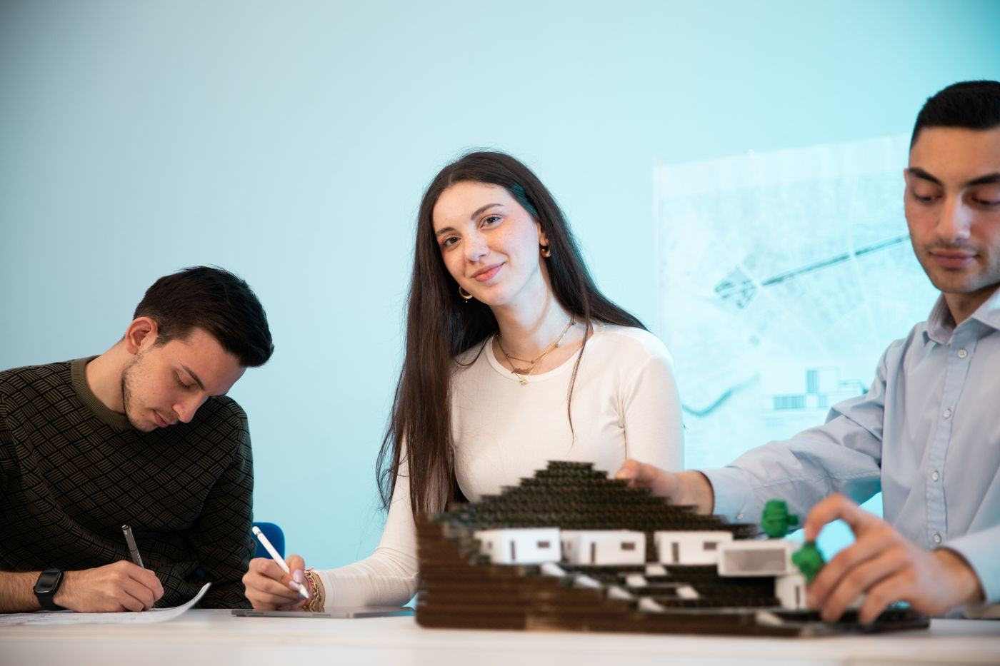

Home › Opleidingen › Bouw, architectuur & ruimte

Opleidingen in Bouw, architectuur & ruimte
Gebouwen, wegen en landschappen ontwerpen en bouwen. Hier staan alle 105 opleidingen in deze groep, op mbo, hbo en universiteit.
Wat kun je ermee?
- Architect of bouwkundig ontwerper
- Constructeur of projectleider
- Planoloog of stedenbouwkundige
- Uitvoerder op de bouw
Op mbo (86)
- Aankomend medewerker grondoptreden
- Aankomend militair grondoptreden
- Aankomend onderofficier grondoptreden
- Allround betonreparateur
- Allround betontimmerman
- Allround dakdekker bitumen en kunststof
- Allround dakdekker metaal
- Allround machinaal houtbewerker
- Allround Metselaar
- Allround meubelstoffeerder
- Allround monteur metalen daken en gevels
- Allround samenbouwer luchtvaartuigen
- Allround sloper
- Allround stukadoor
- Allround tegelzetter
- Allround timmerman
- Allround vakman gww
- Allround waterbouwer
- Allround woningstoffeerder
- Allround zinkwerker
- Asfaltafwerker
- Assistent bouwen, wonen en onderhoud
- Balkman
- Betonreparateur
- Betonstaalvlechter
- Betontimmerman
- Carrosseriebouwer
- Dakdekker bitumen en kunststof
- Dakdekker pannen/leien
- Dakdekker riet
- Dekvloerenlegger
- Eerste Carosseriebouwer
- Eerste Monteur dakbedekking
- Eerste monteur elektrotechnische installaties in de gebouwde omgeving
- Eerste monteur elektrotechnische installaties woning en utiliteit
- Eerste monteur service en onderhoud werktuigbouw
- Eerste Monteur woning
- Elektrotechnicus Infra
- Gastechnicus Infra
- Gezel glaszetter
- Gezel schilder
- Gezel stukadoor
- Glaszetter
- Glazenwasser
- Machinaal houtbewerker
- Machinist grondverzet
- Machinist wegenbouw
- Maritiem officier alle schepen nautisch, waterbouw
- Metselaar
- Meubelstoffeerder
- Middenkaderfunctionaris Bouw
- Middenkaderfunctionaris grond-, weg- en waterbouw
- Middenkaderfunctionaris Infra
- Middenkaderfunctionaris landmeetkunde
- Middenkaderfunctionaris verkeer en stedenbouw
- Monteur metalen daken en gevels
- Opperman bestratingen
- Projectmanager vastgoedonderhoud
- Samenbouwer vliegtuigbouw
- Scheepsbouwer
- Schilder
- Sloper
- Specialist Restauratie Timmerwerk
- Straatmaker
- Stukadoor
- Technicus elektrotechnische installaties in de gebouwde omgeving
- Technicus elektrotechnische installaties woning en utiliteit
- Technicus hout en restauratie
- Technicus service en onderhoud werktuigbouw
- Tegelzetter
- Tekenaar constructeur
- Tekenaar werktuigbouw
- Tekenaar werktuigkundige installaties
- Timmerman
- Uitvoerder
- Uitvoerder bouw/infra
- Uitvoerder gespecialiseerde aannemerij
- Uurwerktechnisch restauratiespecialist
- Vakman gww
- Vastgoedadviseur
- Voeger
- Waterbouwer
- Watertechnicus Infra
- Werkvoorbereider gespecialiseerde aannemerij
- Woning-/projectstoffeerder
- Zinkwerker
Op hbo (11)
- Bouwkunde
- Bouwtechnische Bedrijfskunde
- Built Environment
- Civiele Techniek
- Kust en Zee Management
- Management van de Leefomgeving
- Ocean Technology
- Ruimtelijke Ontwikkeling
- Toegepaste Ecologie en Leefomgeving
- Tuin- en Landschapsinrichting
- Watermanagement
Op wo (universiteit) (7)
- Bouwkunde
- Civiele Techniek
- Civil Engineering
- Geografie, Planologie en Milieu
- Landschapsarchitectuur en ruimtelijke planning
- Spatial Planning and Design
- Urban Studies
Weet je nog niet welke kant je op wilt? De Padvinder laat in 5 minuten zien welke richtingen bij je passen.
Start de Padvinder